Workshop di piante e fiori a Torino e dintorni
Workshop di composizioni floreali, terrarium, orto e piante a Torino e dintorni.
Cerca tutti i workshop18 attività in programma · aggiornato il 25 ottobre 2026
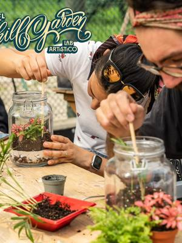
sab31ottPianteCrea il tuo terrarium: piante sotto vetrosabato 31 ottobre, 16:00–18:00San Salvario (TO) · 45 €con Erica Selvatica per El Chill Garden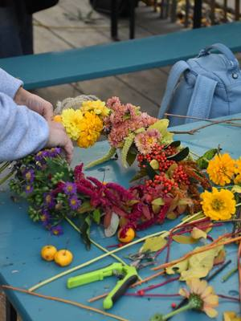
sab7novPianteFiori da taglio: bulbi e ghirlandesabato 7 novembre, 10:00–17:00Mirafiori (TO) · 100 €con Orti Generali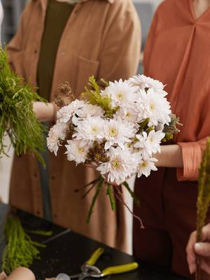
sab7novPianteFiori a colazione: mazzo a spiralesabato 7 novembre, 11:00–12:00Torino · 55 € · esauritocon Bottega Botanica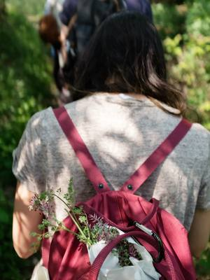
dom8novPianteErbe selvatiche: riconoscerle e usarledomenica 8 novembre, 14:30–17:00Mirafiori (TO) · 30 €con Orti Generali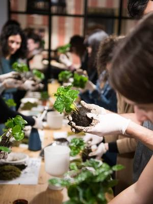
gio12novPianteWorkshop di kokedama: palla di muschiogiovedì 12 novembre, 18:30Torino · 35 €con Bottega Botanica- gio19novPianteWorkshop di kokedama: palla di muschiogiovedì 19 novembre, 18:30Torino · 35 € · esauritocon Bottega Botanica
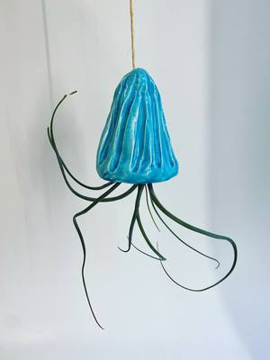
sab21novCeramicaTillandsia: vasi sospesi in ceramicasabato 21 novembre, 16:00–18:00San Salvario (TO) · 48 €con Pottery Lab- ven27novPianteWorkshop Selvatico: ghirlanda di abetevenerdì 27 novembre, 18:15–20:15Villar Perosa (TO) · 60 €con Selva Domestica per Riflessi di Casa
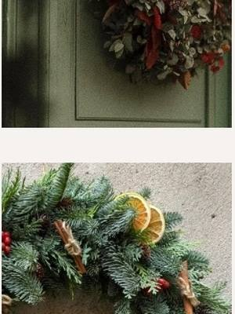
sab28novPianteGhirlande di Natale: abete e coniferesabato 28 novembre, 10:00–12:30Cuneo (CN) · 65 €con Francesca Maina per Atelier Crea-Arti- sab28novPianteWorkshop di kokedama: palla di muschiosabato 28 novembre, 11:00Torino · 35 €con Bottega Botanica
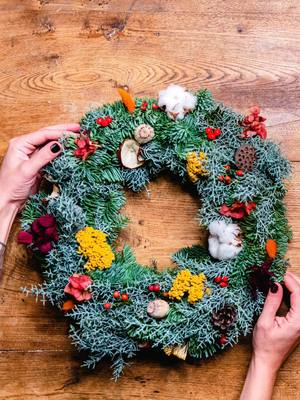
gio3dicPianteWorkshop di ghirlanda: centrotavola di Natalegiovedì 3 dicembre, 18:30–20:00Torino · 55 € · esauritocon Bottega Botanica- ven4dicPianteWorkshop di ghirlanda: centrotavola di Natalevenerdì 4 dicembre, 18:30–20:00Torino · 55 €con Bottega Botanica
- sab5dicPianteWorkshop di ghirlanda: centrotavola di Natalesabato 5 dicembre, 11:00–12:30Torino · 55 €con Bottega Botanica
- gio28genPianteWorkshop di kokedama: palla di muschiogiovedì 28 gennaio, 18:30Torino · 35 €con Bottega Botanica
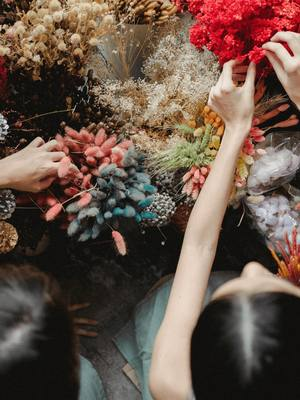
gio18febPianteWorkshop cloche floreale: giardino sotto vetrogiovedì 18 febbraio, 18:30–19:30Torino · 60 €con Bottega Botanica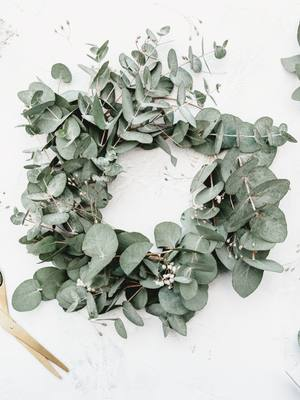
gio25febPianteWorkshop di ghirlanda: eucalipto frescogiovedì 25 febbraio, 18:30Torino · 45 €con Bottega Botanica- sab27febPianteFiori a colazione: mazzo a spiralesabato 27 febbraio, 11:00–12:00Torino · 55 €con Bottega Botanica
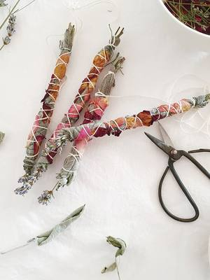
gio11marPianteWorkshop di incenso naturale: smudge stickgiovedì 11 marzo, 18:30Torino · 30 €con Bottega Botanica